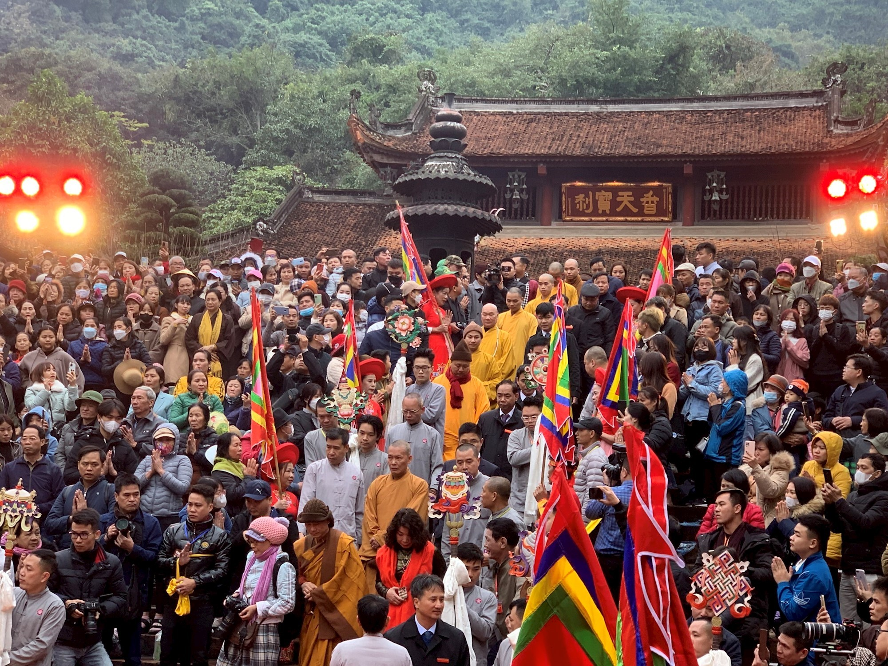
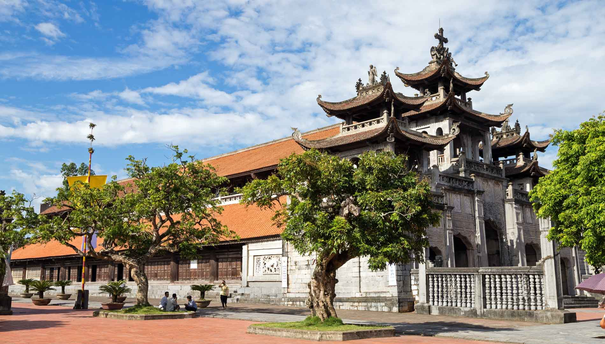
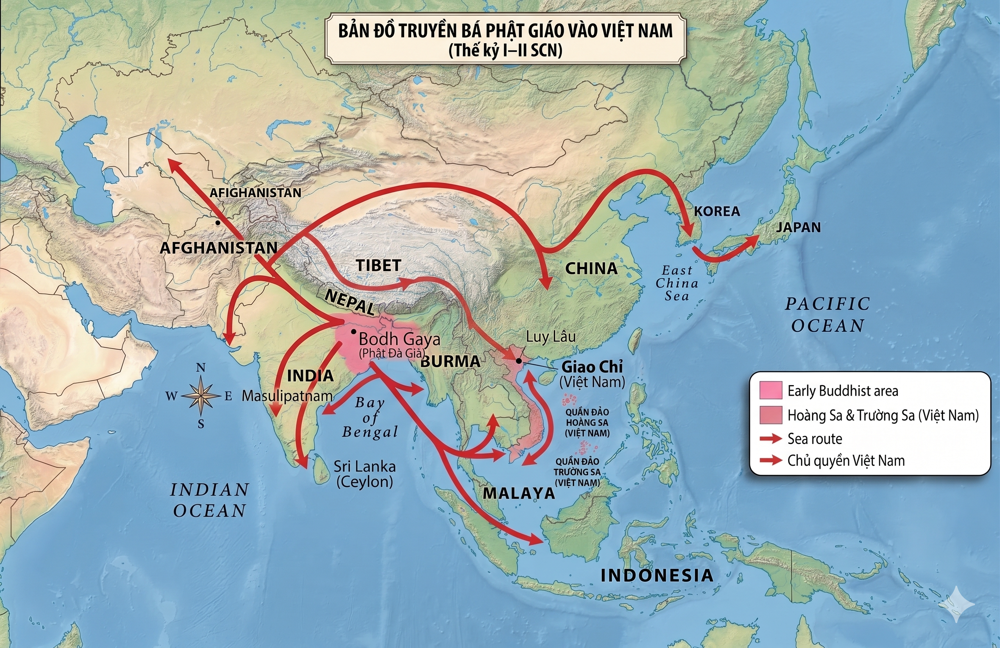
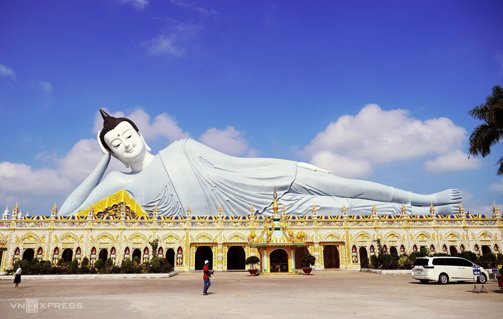
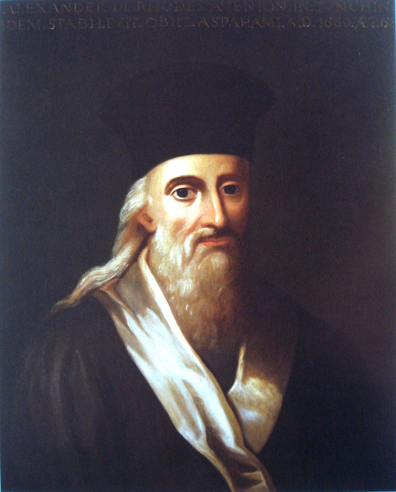
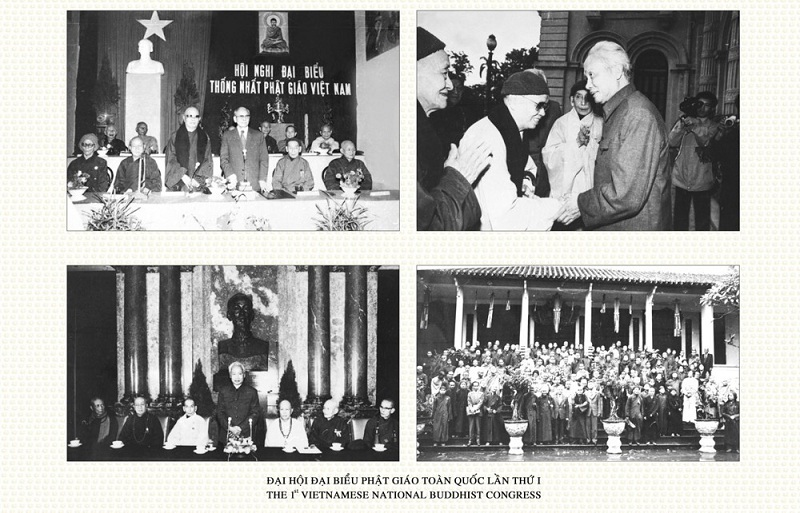
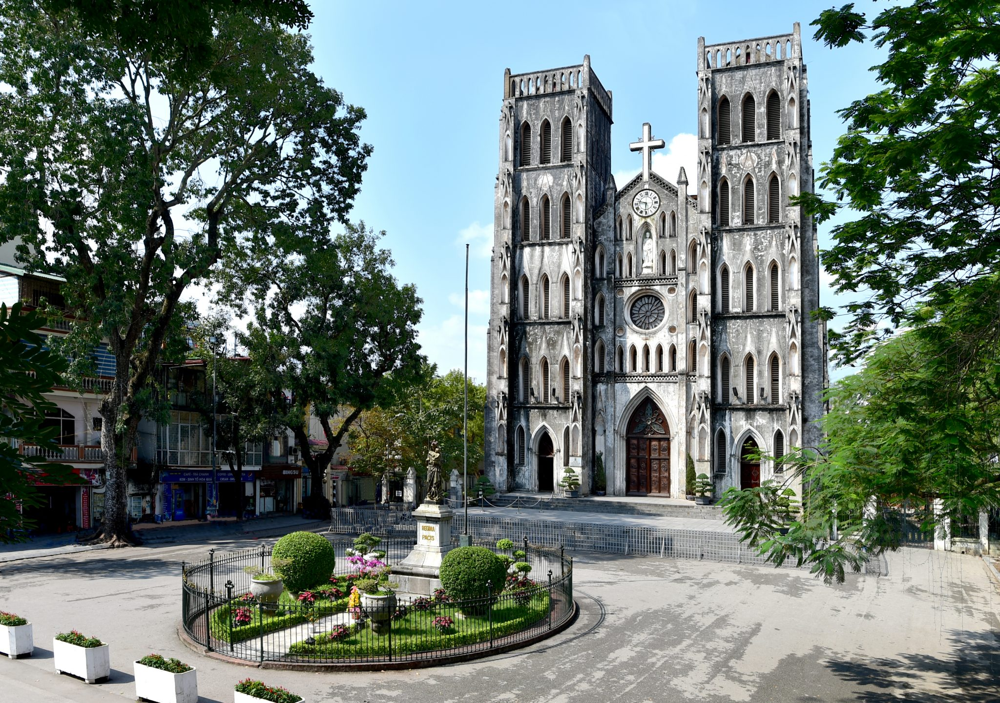

PHẬT GIÁO/CÔNG GIÁO
ĐỒNG HÀNH CÙNG DÂN TỘC
Tôn giáo – Dân tộc – Tổ quốc Việt Nam Xã hội chủ nghĩa
Nhóm 5
Quan điểm Mác-Lênin về Tôn giáo
Theo quan điểm Mác-Lênin, tôn giáo là một hình thái ý thức xã hội, phản ánh hư ảo hiện thực khách quan vào đầu óc con người. Tôn giáo là sản phẩm của lịch sử xã hội, không phải hiện tượng siêu nhiên. Trong thời kỳ quá độ lên CNXH, tôn giáo còn tồn tại lâu dài và cần được tôn trọng, quản lý đúng đắn.
Tôn giáo
Hình thái ý thức xã hội, phản ánh hư ảo hiện thực khách quan, có giáo lý, tổ chức chặt chẽ và tín đồ. Là sản phẩm của lịch sử xã hội, xuất hiện khi con người chưa giải thích được tự nhiên và xã hội.
Tín ngưỡng
Niềm tin vào thần thánh, lực lượng siêu nhiên, không cần tổ chức chặt chẽ. Ví dụ: thờ cúng tổ tiên, thờ Mẫu, thờ Thành Hoàng — bắt nguồn từ phong tục, truyền thống dân tộc.
Mê tín dị đoan
Tin tưởng mù quáng, không có cơ sở khoa học, gây hại cho cá nhân và xã hội: xem bói, cúng tà, tin vào ma thuật, lừa đảo dưới danh nghĩa tâm linh.
Nguồn gốc của Tôn giáo
Nguồn gốc Tự nhiên & KT-XH
Con người bất lực trước thiên nhiên (lũ lụt, hạn hán, dịch bệnh) và áp bức bóc lột trong xã hội có giai cấp đã tạo ra tôn giáo như nơi nương tựa tinh thần.
Nguồn gốc Nhận thức
Giới hạn hiểu biết của con người khiến nhiều hiện tượng tự nhiên và xã hội bị huyền bí hóa, thần thánh hóa. Khi khoa học chưa giải thích được, con người tìm đến tôn giáo.
Nguồn gốc Tâm lý
Sợ hãi, lo âu, cần được an ủi; tình cảm biết ơn, kính trọng tổ tiên và các lực lượng tự nhiên đã nuôi dưỡng nhu cầu tín ngưỡng tôn giáo trong con người.
"Tôn giáo là thuốc phiện của nhân dân" — không phải theo nghĩa tiêu cực, mà là tôn giáo có tác dụng giảm đau tinh thần trong hoàn cảnh khó khăn, nhưng không giải quyết được nguyên nhân gốc rễ của đau khổ xã hội.
Tính chất của Tôn giáo
Tính quần chúng
Gần 3/4 dân số thế giới có tín ngưỡng, tôn giáo. Tôn giáo đáp ứng nhu cầu tinh thần chính đáng của quần chúng nhân dân, không thể xóa bỏ bằng mệnh lệnh hành chính.
Tính chính trị
Trong xã hội có giai cấp, tôn giáo bị lợi dụng phục vụ lợi ích giai cấp thống trị; đồng thời quần chúng bị áp bức cũng dùng ngôn ngữ tôn giáo để phản kháng.
Tính lịch sử
Tôn giáo xuất hiện, tồn tại và biến đổi gắn liền với từng giai đoạn lịch sử. Khi điều kiện kinh tế-xã hội thay đổi, hình thức và nội dung tôn giáo cũng biến đổi theo.


Chính sách Tôn giáo của Đảng và Nhà nước
Nguyên tắc
- Tôn giáo vẫn tồn tại trong thời kỳ quá độ lên chủ nghĩa xã hội (TKQĐ).
- Không trấn áp nhu cầu tín ngưỡng chính đáng của nhân dân.
- Kiên quyết chống lợi dụng tôn giáo để chống phá, chia rẽ dân tộc và gây hại đến Tổ quốc.
6 nội dung chính sách
Tín ngưỡng là nhu cầu tinh thần lâu dài
Tín ngưỡng, tôn giáo là nhu cầu tinh thần lâu dài của nhân dân, đang và sẽ tồn tại cùng dân tộc trong suốt thời kỳ quá độ lên CNXH. Không trấn áp nhu cầu tín ngưỡng chính đáng.
Tự do tín ngưỡng — Các tôn giáo bình đẳng
Thực hiện nhất quán quyền tự do tín ngưỡng, tôn giáo (Hiến pháp 2013 Điều 24). Các tôn giáo bình đẳng trước pháp luật; không phân biệt đối xử trên cơ sở tín ngưỡng, tôn giáo.
Đoàn kết đồng bào tôn giáo trong khối đại đoàn kết dân tộc
Đồng bào có tín ngưỡng và không có tín ngưỡng đều là bộ phận không thể tách rời của khối đại đoàn kết toàn dân tộc; cùng xây dựng và bảo vệ Tổ quốc Việt Nam.
Phát huy giá trị văn hóa, đạo đức và nguồn lực tôn giáo
Phát huy giá trị văn hóa, đạo đức tốt đẹp và nguồn lực vật chất, nhân lực của các tôn giáo đóng góp cho công cuộc xây dựng đất nước. Động viên chức sắc, tín đồ sống "tốt đời, đẹp đạo".
Tăng cường quản lý nhà nước về tôn giáo
Kiên quyết chống lợi dụng tôn giáo để chống phá Đảng, Nhà nước, chia rẽ khối đoàn kết dân tộc, gây hại đến an ninh quốc gia. Luật Tín ngưỡng, Tôn giáo 2016 là khung pháp lý toàn diện điều chỉnh hoạt động tôn giáo.
Tự do hành đạo — Nghiêm cấm truyền đạo trái pháp luật
Mọi người được tự do hành đạo hợp pháp tại gia đình và cơ sở thờ tự. Nghiêm cấm truyền đạo trái pháp luật, ép buộc người theo đạo, lợi dụng tôn giáo can thiệp công việc nội bộ Nhà nước.

Phật giáo Việt Nam

Tổng quan
Đạo pháp – Dân tộc – CNXH
Lịch sử đồng hành với Dân tộc
Du nhập từ Ấn Độ (đường biển) và Trung Quốc (đường bộ); trung tâm Luy Lâu lớn hơn cả Lạc Dương và Bành Thành
Chỗ dựa tinh thần; thiền sư Mâu Tử, Khương Tăng Hội củng cố văn hóa dân tộc thời Bắc thuộc
Quốc giáo; Thiền phái Trúc Lâm Yên Tử (vua Trần Nhân Tông); "Phật pháp bất ly thế gian giác"
Tăng ni phật tử tham gia kháng chiến; HT. Thích Quảng Đức tự thiêu vì đạo pháp (1963)
GHPGVN thành lập; phương châm "Đạo pháp – Dân tộc – Chủ nghĩa xã hội"
Đóng góp tích cực
Cố kết tinh thần dân tộc
Phật giáo là sợi dây liên kết tinh thần bền vững qua hàng nghìn năm lịch sử, góp phần hình thành bản sắc văn hóa và ý thức dân tộc Việt Nam độc đáo.
Văn học, kiến trúc, điêu khắc
Chùa Một Cột, chùa Thiên Mụ, tháp Báo Nghiêm; thơ thiền thời Lý–Trần (Trần Nhân Tông, Tuệ Trung); điêu khắc tượng Phật đặc sắc — di sản văn hóa vô giá.
Triết lý nhân văn
Từ bi, hỷ xả, trí tuệ, vô ngã — tư tưởng nhân văn sâu sắc, định hướng lối sống thiện lành, tương thân tương ái, thấm sâu vào đạo đức người Việt.
Từ thiện xã hội
Khám chữa bệnh miễn phí, nuôi trẻ mồ côi, cứu trợ thiên tai, hỗ trợ đồng bào nghèo — mạng lưới từ thiện Phật giáo rộng khắp cả nước.
Giáo dục đạo đức, nhân cách
Chùa chiền là trung tâm giáo dục đầu tiên; góp phần xây dựng nhân cách, đạo đức, trách nhiệm cộng đồng cho người dân, đặc biệt thế hệ trẻ.
Du lịch tâm linh
Yên Tử, Chùa Hương, Bái Đính, Tam Chúc thu hút hàng triệu lượt khách mỗi năm, đóng góp đáng kể cho kinh tế địa phương và phát triển du lịch quốc gia.



Thách thức & Hạn chế
Các hiện tượng tiêu cực, không phải bản chất Phật giáo
Công giáo Việt Nam

Tổng quan
"Sống Phúc Âm giữa lòng Dân tộc"
Lịch sử đồng hành với Dân tộc
~1533: Giáo sĩ I-nê-khu vào Ninh Cường; Francisco de Pina, Alexandre de Rhodes truyền đạo và học tiếng Việt
Bách đạo khốc liệt; 117 vị tử đạo được phong Hiển thánh năm 1988 bởi Đức Giáo hoàng Gioan Phaolô II
Phong trào "Công giáo kháng chiến"; Ủy ban Liên lạc người CG Yêu nước thành lập 1955
Thư chung HĐGM VN: "Sống Phúc Âm giữa lòng dân tộc để phục vụ hạnh phúc của đồng bào"
VN–Vatican: Đại diện Thường trú từ 2023; phương châm "Tốt đời, đẹp đạo"
Đóng góp tích cực
Chữ Quốc ngữ — Di sản vô giá
Francisco de Pina đặt nền móng, Alexandre de Rhodes hệ thống hóa (1651) — chữ cái La-tinh ký âm tiếng Việt, nền tảng ngôn ngữ dân tộc hiện đại, giúp xóa mù chữ và phổ cập giáo dục toàn quốc.
Giáo dục
Mạng lưới trường từ tiểu học đến đại học, đặc biệt vùng nông thôn và dân tộc thiểu số; Đại học Đà Lạt (1957) — đào tạo nhiều thế hệ trí thức Việt Nam.
Y tế & Từ thiện
Hệ thống bệnh viện, phòng khám, cô nhi viện, nhà dưỡng lão; Dòng Nữ Tử Bác Ái, Dòng Mến Thánh Giá phục vụ cộng đồng không phân biệt tôn giáo, đặc biệt người nghèo.
Yêu nước & Kháng chiến
Linh mục, tu sĩ, giáo dân tham gia kháng chiến chống Pháp và chống Mỹ. "Người Công giáo tốt cũng là người công dân tốt" — phương châm xuyên suốt lịch sử Công giáo Việt Nam.
Kiến trúc & Nghệ thuật
Nhà thờ Đức Bà TP.HCM, Nhà thờ Lớn Hà Nội, Nhà thờ Phát Diệm — kiến trúc Gothic-Việt hòa quyện Đông-Tây độc đáo. Âm nhạc thánh ca tiếng Việt phong phú.
Đạo đức & Lối sống
Giáo lý Kitô giáo về bác ái, yêu thương, trung thực, công bằng, phục vụ người nghèo — góp phần bồi dưỡng nhân cách và xây dựng lối sống trách nhiệm, văn minh.


Thách thức & Hạn chế
Các hiện tượng cụ thể, không đại diện toàn Giáo hội
Thư chung HĐGM Việt Nam 1980
"Sống Phúc Âm giữa lòng dân tộc để phục vụ hạnh phúc của đồng bào."
Đường hướng mục vụ xuyên suốt của Giáo hội Công giáo Việt Nam từ 1980 đến nay
"Tốt đời, đẹp đạo"
"Người Công giáo tốt cũng là người công dân tốt; sống đạo gắn liền với yêu nước, trách nhiệm xã hội và khát vọng xây dựng đất nước phát triển."
Quan hệ Dân tộc và Tôn giáo
Quốc gia đa dân tộc, đa tôn giáo
54 dân tộc, 43 tổ chức tôn giáo của 16 tôn giáo cùng tồn tại; không có xung đột tôn giáo nghiêm trọng nhờ chính sách đoàn kết đúng đắn của Đảng và Nhà nước.
Tôn giáo gắn bó với dân tộc
Truyền thống đồng hành, gắn đạo với đời; ý thức cội nguồn dân tộc thống nhất trong đa dạng tôn giáo — "Đạo không xa Đời, Đạo cùng Đời phụng sự dân tộc".
Tín đồ là nhân dân lao động yêu nước
Tuyệt đại đa số tín đồ các tôn giáo là nhân dân lao động, có tinh thần yêu nước, gắn bó với sự nghiệp xây dựng và bảo vệ Tổ quốc.
Vai trò của chức sắc tôn giáo
Chức sắc tôn giáo có uy tín và ảnh hưởng lớn; xu hướng tiến bộ, yêu nước ngày càng phát triển trong hàng ngũ chức sắc, tu sĩ các tôn giáo.
Quan hệ quốc tế của tôn giáo
Một số tôn giáo có quan hệ quốc tế (Vatican, Phật giáo thế giới); cần kết hợp giao lưu quốc tế với bảo đảm độc lập, chủ quyền quốc gia, không để bị lợi dụng can thiệp nội bộ.
"Tín ngưỡng, tôn giáo là nhu cầu tinh thần của một bộ phận nhân dân, đang và sẽ tồn tại cùng với dân tộc trong quá trình xây dựng chủ nghĩa xã hội ở nước ta. Đoàn kết tôn giáo, hòa hợp dân tộc là yêu cầu quan trọng của quá trình xây dựng Nhà nước pháp quyền xã hội chủ nghĩa Việt Nam."
"Là Hội Thánh trong lòng dân tộc Việt Nam, chúng ta quyết tâm gắn bó với vận mệnh quê hương, noi gương tiền nhân, ra sức phục vụ Tổ quốc và đồng bào."
Thực tiễn & Kết luận
Thực trạng tôn giáo Việt Nam hiện nay


Trách nhiệm của sinh viên
- Nhận thức đúng chính sách tự do tín ngưỡng của Đảng và Nhà nước; phân biệt quyền tự do tín ngưỡng hợp pháp với hành vi vi phạm pháp luật dưới danh nghĩa tôn giáo.
- Tôn trọng và đoàn kết với đồng bào các tôn giáo; không kỳ thị, phân biệt đối xử vì lý do tín ngưỡng, tôn giáo.
- Cảnh giác với âm mưu "diễn biến hòa bình" lợi dụng tôn giáo nhằm chia rẽ khối đại đoàn kết toàn dân tộc, chống phá chế độ xã hội chủ nghĩa.
- Phát huy giá trị nhân văn tốt đẹp của tôn giáo: từ bi, bác ái, trung thực, yêu thương vào cuộc sống học tập và lao động hàng ngày.
- Phòng chống mê tín dị đoan và tà đạo: không tin, không lan truyền, không tham gia vào các tổ chức tôn giáo trái pháp luật.
Kết luận
Phật giáo & Công giáo đồng hành cùng dân tộc
Cả hai tôn giáo đều có truyền thống gắn bó lâu dài với dân tộc Việt Nam, đóng góp tích cực vào lịch sử dựng nước, giữ nước và xây dựng văn hóa dân tộc.
Quan hệ dân tộc–tôn giáo về cơ bản hài hòa
Nhờ chính sách tôn giáo đúng đắn của Đảng và Nhà nước, quan hệ dân tộc–tôn giáo ở Việt Nam được duy trì hài hòa, thống nhất trong đa dạng, không có xung đột nghiêm trọng.
Cảnh giác & Phát huy
Cần cảnh giác trước âm mưu lợi dụng tôn giáo gây chia rẽ dân tộc; đồng thời tích cực phát huy các giá trị đạo đức, nhân văn tốt đẹp của tôn giáo trong xây dựng xã hội.
AI Usage
Dự án được xây dựng với sự hỗ trợ của các công cụ AI. Bên dưới là quy trình sử dụng và vai trò của từng công cụ trong việc thiết kế, tạo nội dung, kiểm tra nguồn và hoàn thiện giao diện.
Mọi nội dung được AI tạo ra đều được nhóm kiểm chứng lại và kiểm tra từng nguồn trước khi hoàn thiện và đưa vào bài trình bày.
© 2025 · MLN131 · FPT University · Phật giáo · Công giáo · Đồng hành cùng Dân tộc